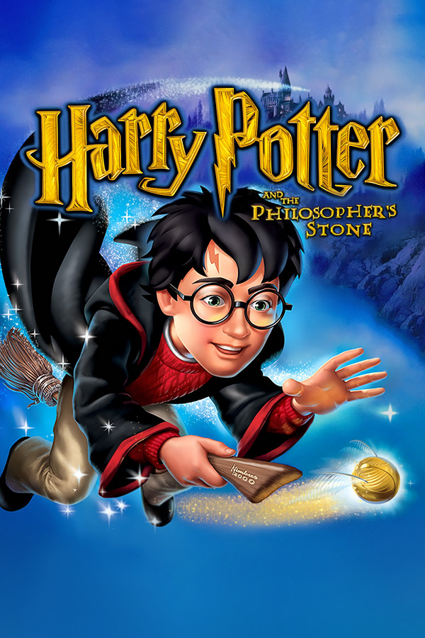
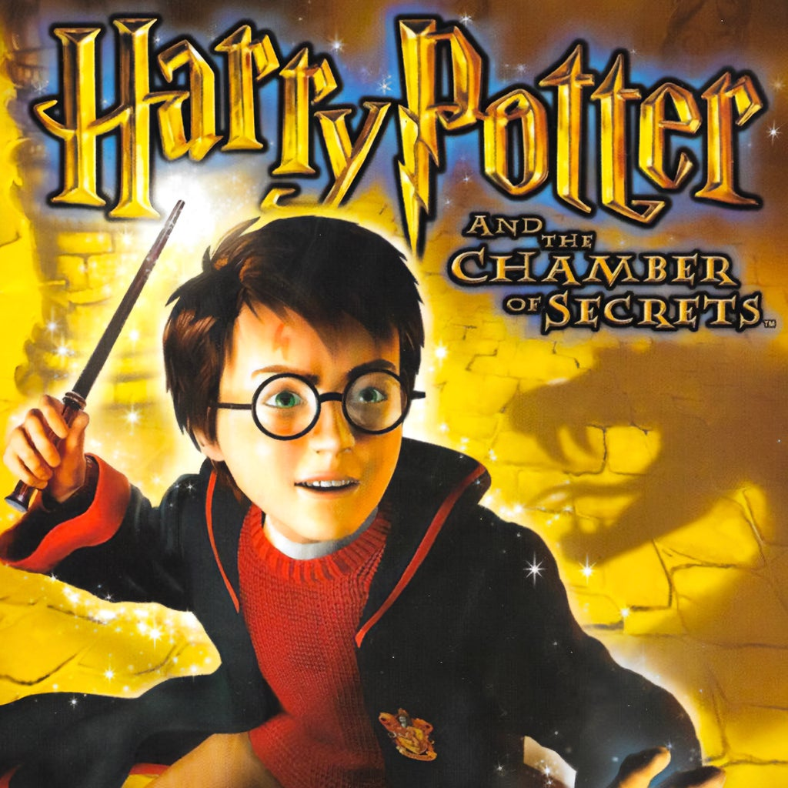
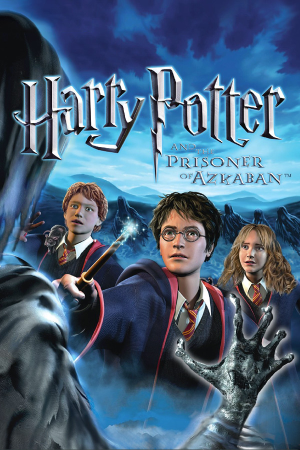
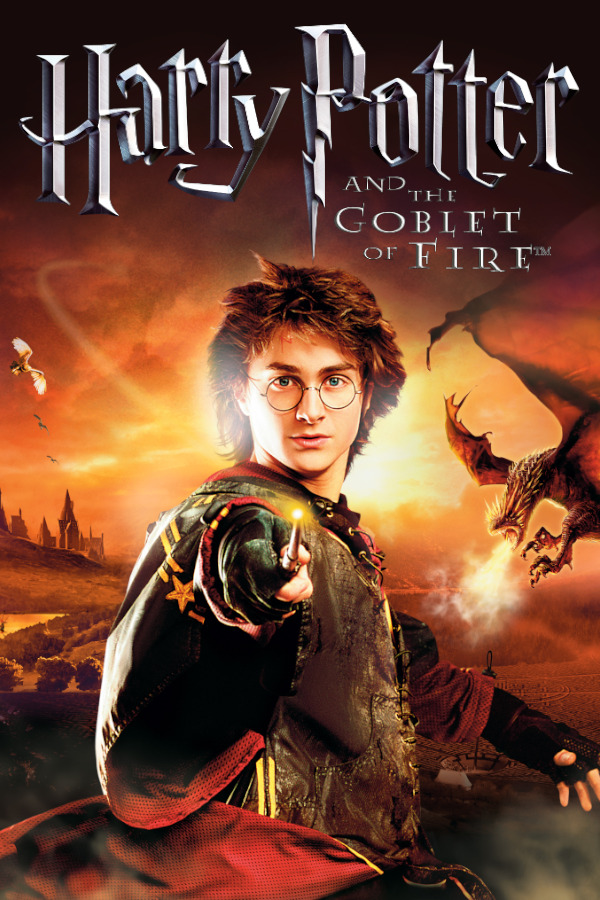
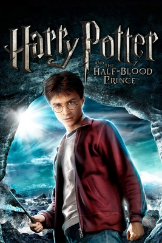
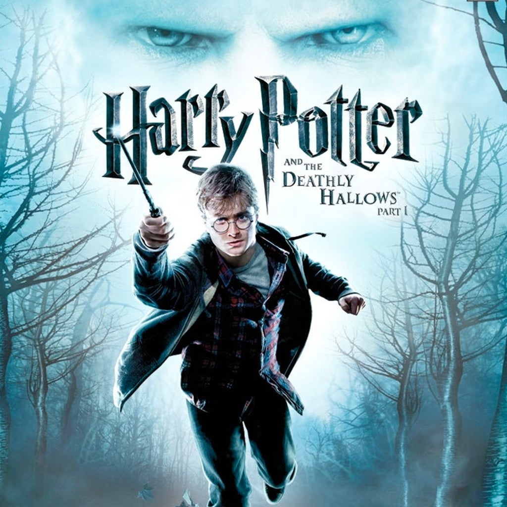
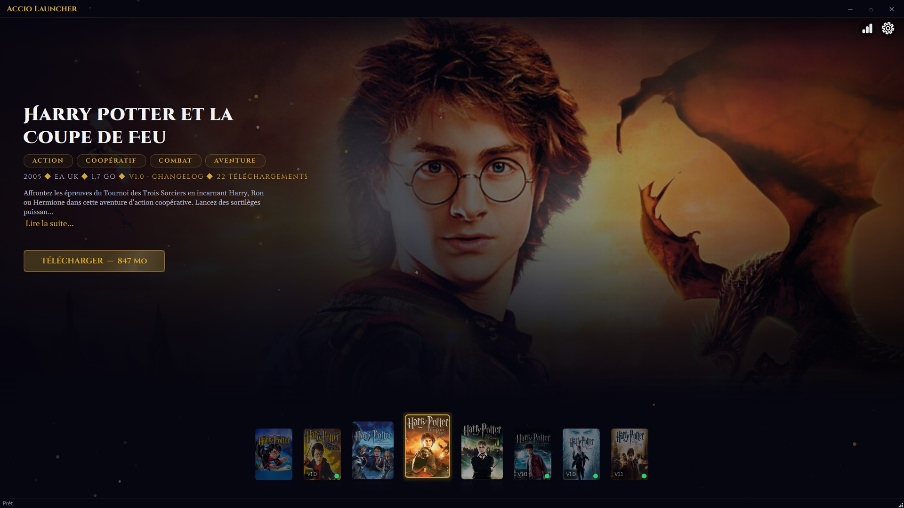

2001 – 2011. Dix ans de jeux Harry Potter PC, réunis dans un seul launcher. Les huit sont en ligne et jouables.






Tout est prêt dès le premier lancement. Choisissez un jeu, cliquez, jouez.

L'impact des améliorations graphiques sur les jeux Harry Potter.
Le launcher avance avec ceux qui y jouent. Un bug signalé, c'est un bug corrigé — et une belle capture, c'est la meilleure vitrine du projet.
Un jeu qui refuse de démarrer, un téléchargement qui s'arrête, un affichage de travers ? Ouvrez un ticket sur GitHub. C'est le chemin le plus court pour que ce soit réparé — et ça évite que dix personnes reperdent la même soirée.
Un couloir de Poudlard sous la bonne lumière, un duel pris au bon moment, un château au coucher du soleil : montrez-les. Sur le Discord ou sur GitHub — les plus belles seront mises en avant.
Une fonction qui manque, un détail qui agace ? Dites-le. Le launcher parle français, anglais et espagnol, et ajouter une langue ne demande pas une ligne de code — juste un fichier de traduction.
Le launcher permet de télécharger et installer les jeux, mais vous devez les posséder légalement. Sinon, le téléchargement se fait sous votre responsabilité. Le code est open-source sur GitHub.
Oui, entièrement. Open-source, pas de pub, pas de tracking.
Le code est public sur GitHub. Chaque archive est vérifiée par son empreinte pendant le téléchargement : un fichier abîmé ou modifié en route est refusé. Aucun compte, aucune donnée collectée, aucune pub.
1920×1080, image nettoyée et lumière retravaillée selon les jeux. Tout est pré-configuré : rien à installer ni à régler à côté.
Oui, depuis la version 1.0 : de l'École des Sorciers (2001) aux Reliques de la Mort partie 2 (2011). Le catalogue est complet.
« Windows a protégé votre ordinateur » est attendu : le launcher est gratuit et n'a pas de certificat de signature, qui coûte plusieurs centaines d'euros par an. Cliquez sur Informations complémentaires, puis Exécuter quand même. L'empreinte du fichier est publiée sur la page de la release si vous voulez la vérifier vous-même.
Non. Le launcher se met à jour lui-même, en un clic, et les jeux déjà installés restent en place.
Windows 10 ou 11, 8 Go de mémoire, 2 Go de mémoire vidéo. Comptez la place du jeu le plus lourd : le launcher vérifie l'espace libre et prévient avant de télécharger.
Développé par un seul passionné, sur son temps libre. Pas de pub, pas de monétisation — juste l'envie de redonner vie à ces jeux.
☕ Offrir un café sur Ko-fi